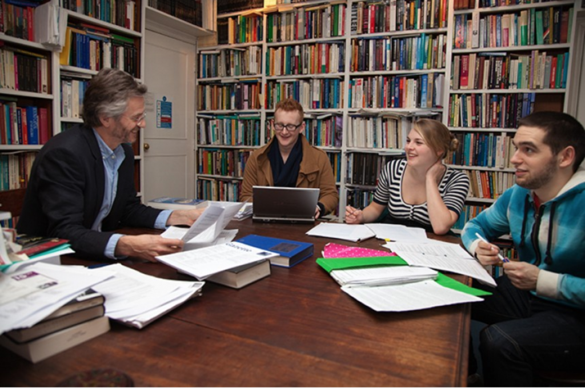

3.4 Aulas expositivas interativas, seminários e tutoriais: aprender conversando


3.4.1 A base teórica e de pesquisa para o diálogo e a discussão
Os pesquisadores identificaram uma distinção, muitas vezes reconhecida intuitivamente pelos docentes, entre a aprendizagem significativa e a mecânica ou decoreba (Ausubel et al., 1978). A aprendizagem significativa envolve o aprendiz ir além da memorização e da compreensão superficial de fatos, ideias ou princípios, em direção a uma compreensão mais profunda do que esses elementos significam para ele. Marton e Säljö, que realizaram uma série de estudos sobre como os estudantes universitários realmente realizam suas aprendizagens, diferenciam as abordagens profunda e superficial da aprendizagem (ver, por exemplo, Marton e Säljö, 1997). Os estudantes que adotam uma abordagem profunda da aprendizagem tendem a ter um interesse intrínseco prévio pelo assunto. Sua motivação é aprender porque querem saber mais sobre um tópico. Os estudantes com uma abordagem superficial da aprendizagem são mais pragmáticos. Seu interesse é impulsionado principalmente pela necessidade de obter uma nota de aprovação ou uma certificação.
Pesquisas subsequentes (por exemplo, Entwistle e Peterson, 2004) mostraram que, além da motivação inicial dos estudantes para o estudo, uma variedade de outros fatores também influencia as abordagens de aprendizagem dos estudantes. Em particular, as abordagens superficiais de aprendizagem são mais comumente encontradas quando há foco em:
- transmissão de informações,
- testes que dependem principalmente da memória,
- falta de interação e discussão.
Por outro lado, abordagens mais profundas de aprendizagem são encontradas quando há foco em:
- pensamento analítico ou crítico ou resolução de problemas,
- discussão em sala de aula,
- avaliação baseada em análise, síntese, comparação e avaliação.
Os construtivistas acreditam que o conhecimento é adquirido principalmente por meio de processos sociais que são necessários para levar os estudantes além da aprendizagem superficial para níveis mais profundos de compreensão. As abordagens conectivistas da aprendizagem também enfatizam fortemente a conexão entre os aprendizes, com todos os participantes aprendendo por meio da interação e discussão mútua, impulsionados tanto por seus interesses individuais quanto pela extensão em que esses interesses se conectam aos interesses de outros participantes. O grande número de participantes em MOOCs conectivistas (ver Capítulo 5) significa que há uma alta probabilidade de convergência de interesses para todos os participantes, embora esses interesses possam variar consideravelmente em todo o grupo.
Laurillard (2001) e Harasim (2017) enfatizaram que o conhecimento acadêmico exige que os estudantes transitem constantemente do concreto para o abstrato e vice-versa, e que construam conhecimento com base em critérios acadêmicos como lógica, evidência e argumentação. Isso, por sua vez, exige uma forte presença do professor em um ambiente dialético, no qual o debate e a discussão dentro das regras e critérios da disciplina são incentivados e desenvolvidos pelo docente. Laurillard chama isso de exercício retórico, uma tentativa de fazer com que os aprendizes pensem sobre o mundo de forma diferente. A conversa e a discussão são críticas para que isso seja alcançado.
A combinação de teoria e pesquisa aqui sugere a necessidade de interação frequente entre estudantes, e entre professor e estudantes, para os tipos de aprendizagem exigidos na era digital. Essa interação geralmente assume a forma de uma discussão semiestruturada. Passarei agora a examinar como esse tipo de aprendizagem tem sido tradicionalmente facilitado pelos educadores.
3.4.2 Seminários e tutorias
3.4.2.1 Definições
Um seminário é uma reunião de grupo (presencial ou on-line) onde vários estudantes participam pelo menos tão ativamente quanto o professor, embora o professor possa ser responsável pelo planejamento da experiência do grupo, como a escolha dos tópicos e a atribuição de tarefas a estudantes individuais.
Uma tutoria (tutorial) é uma sessão individual entre um professor e um estudante, ou um grupo muito pequeno (três ou quatro) de estudantes e um docente, em que os aprendizes são pelo menos tão ativos na discussão e na apresentação de ideias quanto o professor.
3.4.2.2 Seminários
Os seminários podem variar de seis ou mais estudantes até 30 estudantes no mesmo grupo. Como a percepção geral é de que os seminários funcionam melhor quando os números são relativamente pequenos, eles tendem a ser encontrados mais no nível de pós-graduação ou no último ano dos cursos de graduação.


Seminários e tutorias também têm uma história muito longa, que remonta pelo menos ao tempo de Sócrates e Aristóteles. Ambos eram tutores da aristocracia da antiga Atenas. Aristóteles foi o tutor particular de Alexandre, o Grande, quando este era jovem. Sócrates foi o tutor de Platão, o filósofo, embora Sócrates negasse ser um professor, rebelando-se contra a ideia comum na época na Grécia antiga de que 'um professor era um vaso que derramava seu conteúdo na taça do estudante'. Em vez disso, segundo Platão, Sócrates utilizava o diálogo e o questionamento 'para ajudar os outros a reconhecerem por si mesmos o que é real, verdadeiro e bom' (Stanford Encyclopedia of Philosophy). Assim, percebe-se que os seminários e as tutorias refletem uma abordagem fortemente construtivista da aprendizagem e do ensino.
O formato pode variar bastante. Um formato comum, especialmente na pós-graduação, embora práticas semelhantes possam ser encontradas na educação básica, consiste em o professor definir um trabalho prévio para um número selecionado de estudantes e, em seguida, fazer com que estes apresentem seu trabalho para todo o grupo, para discussão, crítica e sugestões de melhoria. Embora possa haver tempo para apenas duas ou três apresentações de estudantes em cada seminário, ao longo de um semestre letivo cada estudante tem a sua vez. Outro formato consiste em pedir a todos os estudantes do grupo que façam uma leitura ou estudo prévio específico e, em seguida, o professor introduz questões para discussão geral no seminário que exigem que os estudantes utilizem o seu trabalho anterior.
3.4.2.3 Tutorias (tutorials)
As tutorias são um tipo específico de seminário identificado com as universidades da Ivy League e, em particular, com Oxford ou Cambridge. Pode haver apenas dois estudantes e um professor em uma tutoria, e o encontro geralmente segue de perto o método socrático, com o estudante apresentando suas descobertas e o professor questionando rigorosamente cada premissa adotada pelo estudante — e também inserindo o outro estudante na discussão.
Ambas as formas de aprendizagem dialógica podem ser encontradas não apenas em contextos de sala de aula, mas também on-line. A discussão on-line será discutida com mais detalhes no Capítulo 4, Seção 4. No entanto, em geral, as semelhanças pedagógicas entre as discussões on-line e as presenciais são muito maiores do que as diferenças.
3.4.3 Os seminários são um método prático em um sistema de educação em massa?
Para muitos docentes, o ambiente de ensino ideal é Sócrates sentado sob a tília com três ou quatro estudantes dedicados e interessados. Infelizmente, a realidade do ensino superior em massa torna isso impossível para todas as instituições, exceto as mais seletivas e caras.
No entanto, seminários para 25 a 30 estudantes não são irrealistas, mesmo no ensino público de graduação. Mais importante ainda, eles possibilitam o tipo de ensino e aprendizagem com maior probabilidade de facilitar os tipos de competências exigidas de nossos estudantes na era digital. Os seminários são flexíveis o suficiente para serem oferecidos em sala de aula ou on-line, dependendo das necessidades dos estudantes. Eles são provavelmente melhor utilizados quando os estudantes realizaram trabalho individual antes do seminário. De suma importância, porém, é a capacidade dos professores de ensinar com sucesso dessa maneira, o que exige competências diferentes daquelas das aulas transmissivas.
Embora a expansão do número de estudantes no ensino superior seja parte do problema, não é o problema todo. Outros fatores, como professores titulares ensinando menos e focando principalmente em estudantes de pós-graduação, levam a turmas maiores na graduação que utilizam aulas transmissivas. E se mais docentes experientes abandonassem as aulas transmissivas e, em vez disso, exigissem que os estudantes buscassem e analisassem o conteúdo por si mesmos, isso liberaria mais tempo para que se dedicassem ao ensino do tipo seminário.
Portanto, trata-se tanto de uma questão organizacional, de escolha e prioridades, quanto de uma questão econômica. Quanto mais pudermos avançar em direção a uma abordagem de seminário para o ensino e a aprendizagem, afastando-nos das grandes aulas transmissivas, melhor será se quisermos formar estudantes com as competências necessárias na era digital.
Referências
Ausubel, D., Novak, J., & Hanesian, H. (1978). Educational Psychology: A Cognitive View (2nd Ed.). New York: Holt, Rinehart & Winston.
Entwistle, N. and Peterson, E. (2004) Conceptions of Learning and Knowledge in Higher Education: Relationships with Study Behaviour and Influences of Learning Environments International Journal of Educational Research, Vol. 41, No. 6, pp. 407-428
Harasim, L. (2017) Learning Theory and Online Technologies New York/London: Taylor and Francis
Laurillard, D. (2001) Rethinking University Teaching: A Conversational Framework for the Effective Use of Learning Technologies New York/London: Taylor and Francis
Marton, F. & Saljö, R. (1997). ‘Approaches to learning’, in F. Marton, D. Hounsell, & N. Entwistle (Eds.), The experience of learning. Edinburgh: Scottish Academic Press.
Atividade 3.4 Desenvolvendo a aprendizagem conceitual
1. Que tipo de intervenções do professor em discussões de grupo você sugere para ajudar os aprendizes a desenvolver uma aprendizagem profunda e conceitual?
2. Como reorganizar uma sala de aula expositiva de 200 ou mais estudantes para promover o trabalho em grupo e o desenvolvimento da aprendizagem conceitual?
Clique no podcast abaixo para minhas sugestões:
Um elemento de áudio foi excluído desta versão do texto. Você pode ouvi-lo on-line aqui: https://pressbooks.bccampus.ca/teachinginadigitalagev2/?p=92